Cómo funciona Loon
Navegar con el viento

Los globos del Proyecto Loon viajan a 20 km de la superficie terrestre, en la estratósfera. Los vientos de esta zona están estratificados, es decir, hay muchas capas de viento que varían en dirección y velocidad. El Proyecto Loon utiliza algoritmos de software para determinar adónde deben dirigirse los globos y, luego, los traslada a una capa de viento que sople en la dirección buscada. Como los globos se desplazan con el viento, es posible dirigirlos para formar una gran red de comunicaciones.
La estratósfera

Ubicada en el límite con el espacio exterior, a una altura de entre 10 y 60 km, la estratósfera presenta desafíos únicos de ingeniería: la presión atmosférica es del 1 % con respecto al nivel del mar, y, a su vez, una atmósfera más delgada ofrece menos protección contra la radiación UV y los cambios bruscos de temperatura, la cual puede alcanzar los 80 °C bajo cero. Por medio de un diseño cuidadoso de la cubierta de los globos, que permite hacer frente a esas condiciones, el Proyecto Loon logra aprovechar los vientos invariables de la estratósfera y permanecer por encima de los fenómenos meteorológicos, de la vida silvestre y de los aviones.
Cómo está pensado Loon
Cubierta

A la parte inflable del globo la llamamos cubierta. Es fundamental construir una cubierta de calidad para el globo, ya que esto permitirá que permanezca en la estratósfera durante aproximadamente 100 días. Las cubiertas de los globos de Loon están hechas de filamentos de polietileno y miden 15 m de ancho por 12 m de alto cuando están infladas. Cuando un globo está listo para ser retirado de servicio, liberamos el gas de la cubierta para lograr un descenso controlado. En el improbable caso de que el globo descienda a demasiada velocidad, abrimos el paracaídas de la parte superior para disminuirla.
Paneles solares

Los componentes electrónicos de cada globo funcionan con energía de paneles solares hechos de plástico laminado flexible y colocados en un marco de aluminio liviano. Utilizan células solares monocristalinas de alto rendimiento. Los paneles se montan en un ángulo empinado para que puedan capturar de forma efectiva la luz solar durante los días más cortos de invierno en zonas de latitud alta. Se dividen en dos secciones que apuntan hacia direcciones opuestas, lo que nos permite capturar la energía proveniente de cualquier orientación mientras los globos giran en el viento. Con sol pleno, los paneles producen aproximadamente 100 W de energía, lo suficiente para que los circuitos electrónicos de Loon sigan funcionando mientras se carga una batería para uso nocturno. Como los globos se desplazan con el viento y se cargan con el Sol, el Proyecto Loon produce su propia energía utilizando solo recursos renovables.
Electrónica

Debajo de la cubierta inflada, se ubica una caja con los componentes electrónicos del globo, como las canastas que llevan los globos aerostáticos. Esta caja contiene placas con circuitos que controlan el sistema, antenas de radio para que los globos se comuniquen entre sí y con las antenas de la Tierra, y baterías de iones de litio para almacenar la energía solar y, de esta forma, permitir que los globos funcionen durante la noche.
Cómo proporciona conectividad Loon

Cada globo puede proporcionar conectividad a un área terrestre de aproximadamente 40 km de diámetro mediante una tecnología de comunicación inalámbrica llamada LTE. Para usar LTE, el Proyecto Loon se asocia con empresas de telecomunicación para compartir el espectro celular, de manera que las personas puedan acceder a Internet desde cualquier lugar directamente con sus teléfonos y otros dispositivos habilitados para LTE. Los globos transmiten el tráfico inalámbrico de teléfonos celulares y otros dispositivos a la Internet global mediante vínculos de alta velocidad.
Avances
En este video, Mike Cassidy, líder del proyecto, explica en detalle el progreso del equipo en la creación y administración de una red de globos a escala, y cómo se hizo realidad la idea de brindar un servicio de Internet para todo el mundo por medio de globos.
¿Te interesa saber más?
Si quieres obtener más información sobre cómo funciona Loon, visita nuestra página de Google+. Comparte tus preguntas en #AskAway.